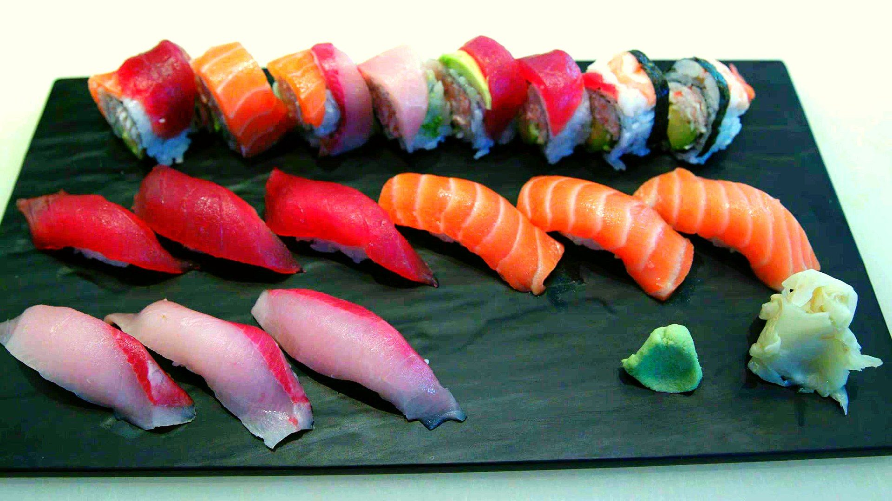
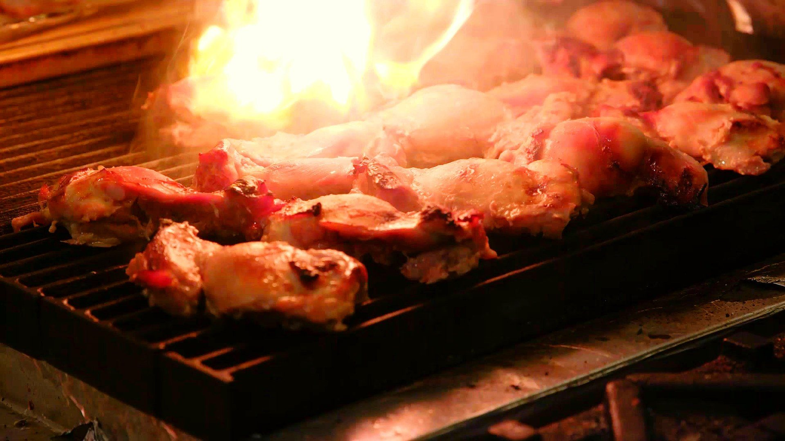
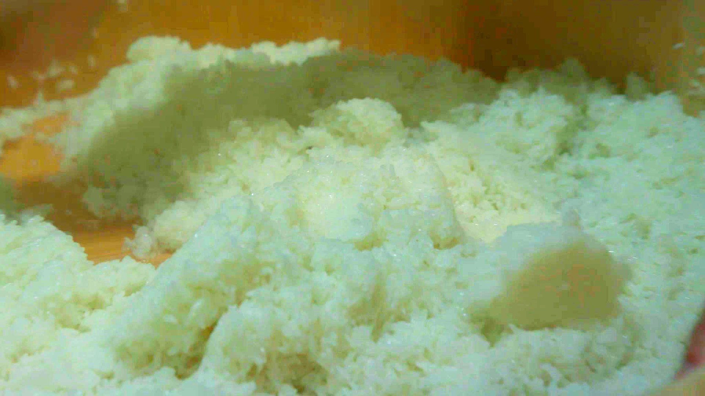
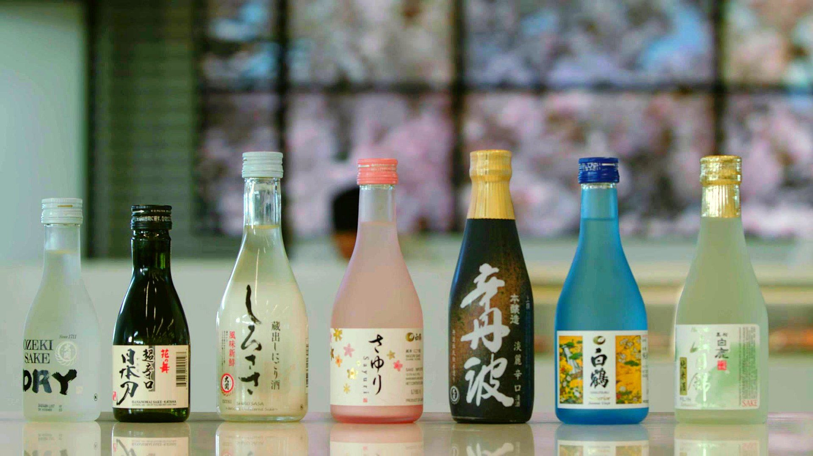

01 / 08
Sushi
寿司

Sushi Platter
12.95
Sushi, noodles, rice bowls and more. Simple, honest Japanese food for travelers.








Menu source: sankaku-menu.pdf (2020). Photos are illustrative and may not show the exact dish.